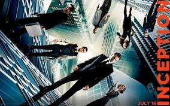

Inception is a 2010 science fiction action film written, co-produced, and directed by Christopher Nolan, and co-produced by Emma Thomas. The film stars Leonardo DiCaprio as a professional thief who steals information by infiltrating the subconscious, and is offered a chance to have his criminal history erased as payment for the implantation of another person's idea into a target's subconscious.
The ensemble cast additionally includes Ken Watanabe, Joseph Gordon-Levitt, Marion Cotillard, Ellen Page, Tom Hardy, Dileep Rao, Cillian Murphy, Tom Berenger, and Michael Caine.
The score for Inception was written by Hans Zimmer, who described his work as "a very electronic, dense score", filled with "nostalgia and sadness" to match Cobb's feelings throughout the film.
The music was written simultaneously to filming, and features a guitar sound reminiscent of Ennio Morricone, played by Johnny Marr, former guitarist of The Smiths. Édith Piaf's "Non, je ne regrette rien" ("No, I Regret Nothing") pointedly appears throughout the film, used to accurately time the dreams, and Zimmer reworked pieces of the song into cues of the score.
A soundtrack album was released on July 11, 2010 by Reprise Records. The majority of the score was also included in high resolution 5.1 surround sound on the second disc of the 2 disc Blu-ray release Hans Zimmer's music was nominated for an Academy Award in the Best Original Score category in 2011, losing to Trent Reznor and Atticus Ross of The Social Network.
The casting is composed of the following actors :
Here is the film's poster :

Numerous pop and hip hop songs reference the film, including Common's "Blue Sky", N.E.R.D's "Hypnotize U", XV's "The Kick", The Black Eyed Peas' "Just Can't Get Enough", Lil Wayne's "6 Foot 7 Foot", Jennifer Lopez's, "On the Floor", and B.o.B's "Strange Clouds", while T.I. had Inception-based artwork on two of his mixtapes. An instrumental track by Joe Budden is titled "Inception ".
The animated series South Park parodies the film in the show's tenth episode of its fourteenth season, titled "Insheeption".
The film was also an influence for Ariana Grande's video for "No Tears Left to Cry."
Information present on this page are from the Wikipedia page : Inception